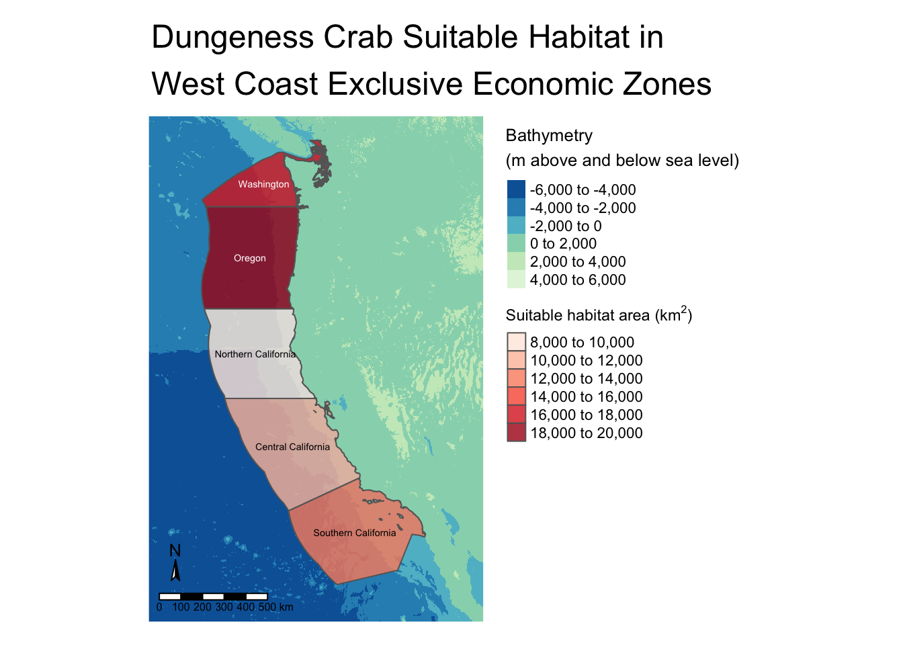
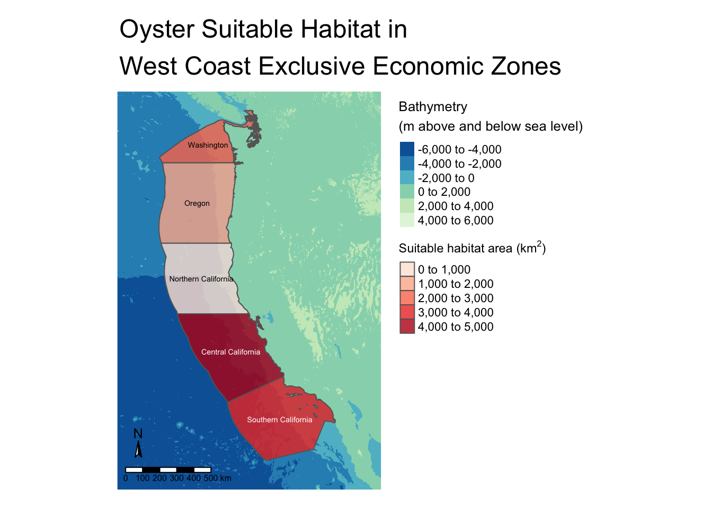

Load packages
library(sf)
library(here)
library(terra)
library(tmap)
library(tidyverse)
library(viridisLite)
library(RColorBrewer)
library(kableExtra)
library(testthat)
library(patchwork)Prioritizing potential aquaculture
This project explores the potential suitable habitat of marine aquaculture species off the West Coast of the United States. Marine aquaculture has the potential to play an important role in the global food supply as a more sustainable protein option than land-based meat production. This project will:
library(sf)
library(here)
library(terra)
library(tmap)
library(tidyverse)
library(viridisLite)
library(RColorBrewer)
library(kableExtra)
library(testthat)
library(patchwork)Our function to visualize which exclusive economic zones are best-suited to marine aquaculture development for a given species takes 5 arguments:
species str, the name of the species of interestmin_sst int, the minimum sea surface temperature of the speciesmax_sst int, the maximum sea surface temperature of the speciesmin_depth int, the minimum depth of the speciesmax_depth int, the maximum depth of the species# Source our final output function
source("aqua_fun.R")
# Visualize results for Dungeness Crabs
aqua_fun("Dungeness Crab", 3, 19, -360, 0)
This map shows the 5 major exclusive economic zones off the West Coast of the United States. These zones are Washington, Oregon, Northern California, Central California, and Southern California. The regions are colored by the amount of suitable habitat area (km^2) for the chosen species they contain. For example, with the Dungeness Crab, Oregon has the most amount of suitable habitat with Washington being second, and Southern California being third.
Now that we understand the final output of our generalizable workflow function, let’s break down the steps to get there.
We’ll start by reading in data for exclusive economic zones of the west coast, bathymetry data, and sea surface temperature data.
# Read in eez and depth data
eez <- read_sf(here("data", "wc_regions_clean.shp"))
depth <- terra::rast(here("data", "depth.tif"))
# Create list of sst files
sst_files <- list.files(here("data"),
pattern = "average",
full.names = TRUE)
# Read in sst rasters as a stack
sst <- c(rast(sst_files))if(st_crs(eez) == st_crs(depth)) {
print("Coordinate reference systems match")
} else{
warning("Updating coordinate reference systems to match")
# transform data to match
eez <- st_transform(eez, st_crs(depth))
}[1] "Coordinate reference systems match"if(st_crs(sst) == st_crs(depth)) {
print("Coordinate reference systems match")
} else{
warning("Updating coordinate reference systems to match")
# transform data to match
sst <- project(sst, crs(depth))
}Warning: Updating coordinate reference systems to matchConvert our SST data to the appropriate units and ensure the extent, resolution, and CRS of our depth and SST data match.
# Find the mean sst and convert to Celsius
mean_sst <- app(sst, fun = mean)
mean_sst <- mean_sst - 273.15
# Crop the depth raster to match extent of sst
depth_crop <- crop(depth, mean_sst)
# Resample depth to match resolution of sst
depth_resample <- resample(depth_crop,
y = mean_sst,
method = "near") # nearest neighbor
# Check that resolution, extent, and CRS match
test_stack <- c(depth_resample, mean_sst)Here, we resample by the nearest neighbor method which assigns the value of the nearest cell in the input raster to each cell in the output raster.
Reclassify SST and depth data into locations that are suitable for oysters
# Create sst reclassification matrix
rcl_sst <- matrix(c(-Inf, 11, NA, # min sst
11, 30, 1,
30, Inf, NA), # max sst
ncol = 3, byrow = TRUE)
# Use reclassification matrix to reclassify sst raster
reclass_sst <- classify(mean_sst, rcl = rcl_sst)# Create depth reclassification matrix
rcl_depth <- matrix(c(-Inf, -70, NA, # min depth
-70, 0, 1,
0, Inf, NA), # max depth
ncol = 3, byrow = TRUE)
# Use reclassification matrix to reclassify depth raster
reclass_depth <- classify(depth_resample, rcl = rcl_depth)# Find locations that satisfy both SST and depth conditions
sst_depth <- lapp(c(reclass_sst, reclass_depth), fun = "*")Here, we reclassify our SST and depth rasters to show us only values that our species of choice can survive in. Then, we multiply those two rasters together to create a new raster that contains habitable SST and Depth values for our species.
We want to determine the total suitable area within each EEZ in order to rank zones by priority. To do so, we need to find the total area of suitable locations within each EEZ.
# Find area of suitable cells
suitable_area <- cellSize(x = sst_depth, # places where sst and depth match
mask = TRUE, # keeps NA values
unit = 'km')
# Rasterize EEZ data
eez_raster <- rasterize(eez,
suitable_area,
field = 'rgn') # Transfer values to each eez region
# Use zonal algebra to sum the suitable area by region
eez_suitable <- zonal(x = suitable_area,
z = eez_raster, # Raster representing zones
fun = 'sum',
na.rm = TRUE)
# To map our eez area with geometry later on
eez <- left_join(eez, eez_suitable, by = "rgn")# View the area per region of suitable habitat for Oysters
kable(eez_suitable, digits = 2,
caption = "Suitable area by exclusive economic zone",
col.names = c("EEZ Region", "Area (km^2)"))| EEZ Region | Area (km^2) |
|---|---|
| Central California | 4069.57 |
| Northern California | 178.02 |
| Oregon | 1074.26 |
| Southern California | 3508.19 |
| Washington | 2378.28 |
Finally, we’ll map the exclusive economic zones of the West Coast and color them by total suitable area for Oysters.
# Plot regions and suitable areas together
tm_shape(depth) +
tm_raster(palette = "-GnBu",
title = "Bathymetry\n(m above and below sea level)",
midpoint = 0,
legend.show = TRUE) +
tm_shape(eez, raster.downsample = TRUE) +
tm_polygons(col = "area",
palette = "Reds",
alpha = 0.8,
linewidth = 0.2,
title = expression("Suitable habitat area (km"^2*")")) +
tm_text("rgn", size = 0.45) +
tm_compass(size = 1,
position = c("left", "bottom")) +
tm_scale_bar(position = c("left", "bottom")) +
tm_layout(legend.outside = TRUE,
frame = FALSE,
main.title = "Oyster Suitable Habitat in\nWest Coast Exclusive Economic Zones")
Similar to our map of Dungeness Crab at the beginning, we can see a representation of the 5 major exclusive economic zones off the West Coast of the United States colored by the amount of suitable habitat area (km^2) for the chosen species they contain. Oysters have the most suitable habitat in Central California, the second most in Southern California, and the third most in Washington.
Overall, a function such as the one created here can be useful tool to help scientists and policymakers to understand where they should be directing their aquaculture development efforts on the West Coast. As climate and land-use change continue to become pressing threats to our global food systems, understanding where we might alleviate some of the terrestrial production pressure by turning to aquaculture is vitally important.
#| code-fold: true #| code-summary: “Reveal code”
tribble( ~Data, ~Citation, ~Link, “Sea Surface Temperature Data”, “NOAA Coral Reef Watch. 2019, updated daily. NOAA Coral Reef Watch Version 3.1 Daily 5km Satellite Regional Virtual Station Time Series Data. College Park, Maryland, USA: NOAA Coral Reef Watch. Data set accessed 2024-11-20 at https://coralreefwatch.noaa.gov/product/vs/data.php.”, “NOAA Coral Reef Watch”, “Bathymetry Data”, “GEBCO Compilation Group (2022) GEBCO_2022 Grid (doi:10.5285/e0f0bb80-ab44-2739-e053-6c86abc0289c)”, “GEBCO”, “Exclusive Economic Zones”, “Flanders Marine Institute (2024): MarineRegions.org. Available online at www.marineregions.org. Consulted on 2024-11-30.”, “Marine Regions”, “Sea Life Base Aquaculture Data”, “Palomares, M.L.D. and D. Pauly. Editors. 2024. SeaLifeBase. World Wide Web electronic publication. www.sealifebase.org, version (08/2024).”, “Sea Life Base” ) %>% kable()